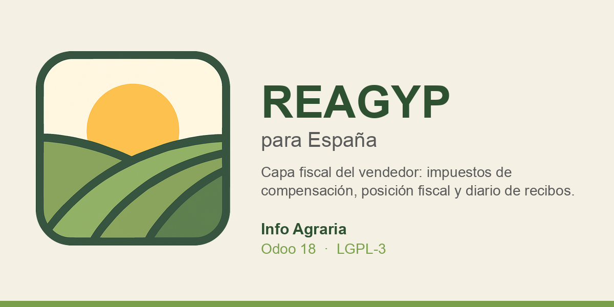

This module adds the seller-side fiscal layer for the Spanish
REAGYP regime (Régimen Especial de la Agricultura,
Ganadería y Pesca) on top of the mainland Spanish chart of
accounts (l10n_es).
Farmers, stockbreeders and fishers under this special VAT regime do not charge VAT on their sales; instead, the buyer pays them a flat-rate compensation (12% for agricultural and forestry products, 10.5% for livestock and fishing products). This module provides everything the seller needs to invoice that compensation correctly.
es_common_mainland chart.
On installation the data is injected into the chart template. A
post_init_hook backfills companies that already had a
mainland Spanish chart installed. Canary Islands charts are out of
scope: there is no REAGYP under the Canary regime.
Open-source software and consulting for Spanish agriculture. Contact: info@infoagraria.es